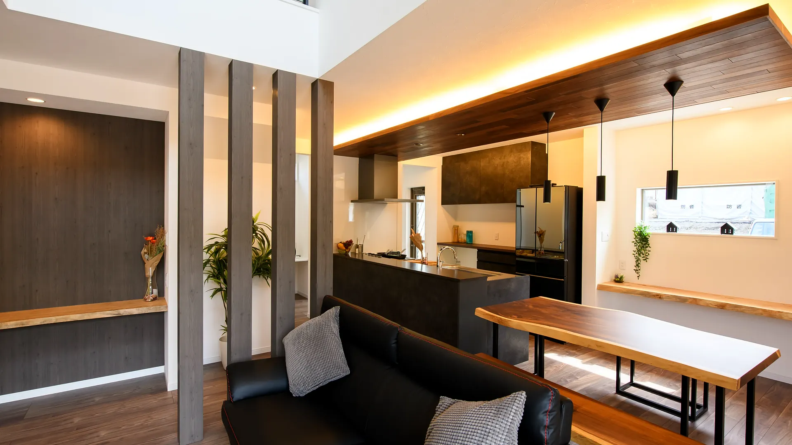
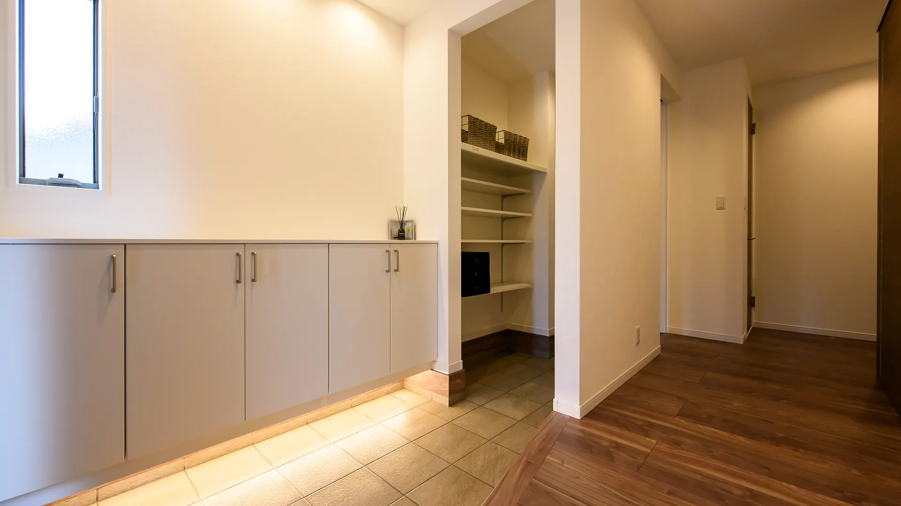

やまとの家
花鳥風月
The House of Yamato
やまとの家
花鳥風月
The House of Yamato
やまとの家
ずっと、愛せる家。
「花鳥風月」自然の美しさを愛でる心のように、
住む人のこだわりを形にする「注文住宅」
標準装備

Kitchen
Standardクリナップ ステディア標準
標準装備

Bath
StandardTOTO サザナ標準
標準装備

Vanity
StandardTOTO オクターブ Lite標準
標準装備

Living
Standard天井高2.4m・ハイドア2.3m標準
標準装備

Wall
Standard旭化成 ヘーベルパワーボード標準
標準装備

Tatami
StandardDAIKEN 和紙畳 ここち和座標準
標準装備

Entrance
StandardLIXIL ジエスタ2標準
費用のこと
標準装備のグレードが高いので、
あとから設備を足す必要がありません。
一般的にはかかる費用が、
やまとでは0円です。
土地測量費・土地造成費・水道工事変更費も0円です。
2,000万円規模の土地の場合、通常400万円〜470万円かかる費用が全て0円です。
こだわり

浮いた費用は、オプションに回すこともできます。
Atrium
Option吹き抜け・天井を上げる自由設計
こだわり

Counter
Option造作カウンター・折り下げ天井の間接照明自由設計
こだわり

Storage
Option玄関の造作収納・足元の間接照明自由設計

ご案内
花鳥風月 ── やまとの家
大手で諦めた家を、
当社と一緒に叶えましょう。
自由設計と、高水準な標準装備。
株式会社やまと不動産
奈良県奈良市大宮町1丁目6番21
1操作＝1シーンのステップ送りです。流れは、表紙 → 標準装備の実物7景 → 一般的にかかる費用が0円 → 浮いた費用で叶うオプション3景 → 招待、の順です。標準の高さを先に見ていただき、その費用が0円であること、そしてその分をこだわりに回せることを、この順に置いています。PCでは右端のドットで任意のシーンへ移動できます。最終シーンのあとは通常のスクロールに戻ります。
JSが無効の環境や、視差効果を減らす設定の環境では、
全シーンを縦に並べた静的表示になります。
URLに ?static=1 を付けても同じ表示を確認できます。